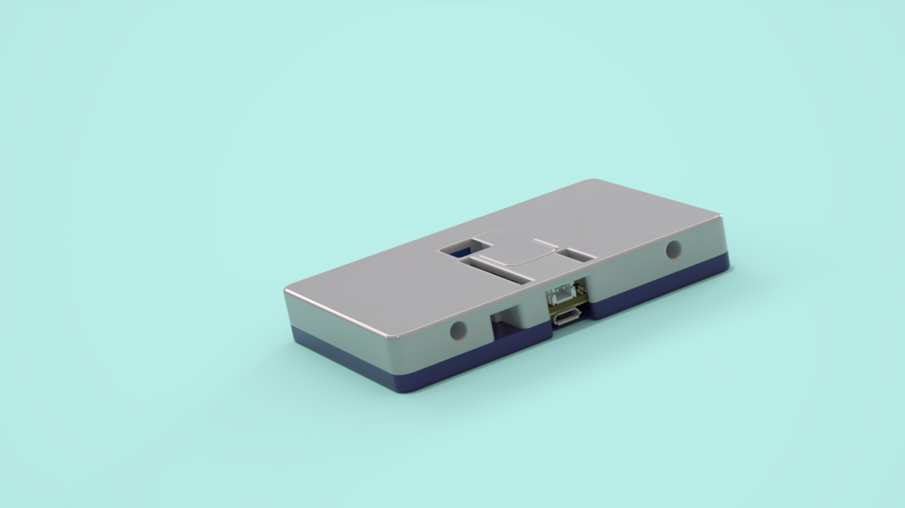

Build the box
A tap-to-connect controller for LEGO Education motors and sensors, built on a Raspberry Pi Pico W. Follow the steps to print, wire, and assemble it. Budget about an evening plus print time.
Parts
- Maker Pi Pico Mini — get the Pico W (wireless) variant; a plain Pico can't do Bluetooth
- LiPo battery, 3.7V 500mAh — plugs straight into the board's battery port
- RFID reader — M5Stack RFID Unit 2 (WS1850S)
That's the whole required list — the Maker Pi Pico Mini already has the NeoPixel, buzzer, and button this project uses built in. You'll also need the LEGO connection card that came with your LEGO Education motor.
Adding an I²C sensor? Two known-good, plug-in options: a SparkFun Micro OLED or the SparkFun Qwiic Joystick — both optional.
The two case halves bolt together, not snap: 4× M2 heat-set inserts melted into the case cover's top face, secured with 4× M2×12mm bolts.
Tools
- 3D printer + filament
- USB cable (data, not charge-only)
- Chrome or Edge on a computer
- Soldering iron — to set the heat-set inserts, and if wiring raw analog sensors (LDRs/pots) rather than a plug-in I²C sensor
-
Print the case cover
Drag to rotate, scroll to zoom.
These three STL files are the three color regions of a single multi-material print, not separate parts to glue together — the main top, a black boundary trim, and a white light-diffuser reflector all print together as one piece. This was printed on a Prusa XL (2-toolhead / 2T). Print at 0.2 mm layer height; no supports needed. No multi-material printer? Print the three files separately on any single-material printer and glue them together in the same arrangement instead.
-
Print the back cover
Drag to rotate, scroll to zoom.
Print at 0.2 mm layer height; supports needed under the card slot.
-
Wire the Pico
No soldering needed for the core build — the Maker Pi Pico Mini's three built-in "Maker Ports" (JST-SH, Qwiic/STEMMA QT/Grove-compatible) line up exactly with what the firmware expects:
Plug in Maker Port GPIO RFID reader (via its included Grove→JST-SH cable) GP0 (SDA) / GP1 (SCL) OLED and/or an I²C sensor — see I²C sensor GP4 (SDA) / GP5 (SCL) Two analog sensors — see Analog sensor GP26 (A0) / GP27 (A1) LiPo battery onboard 2-pin JST connector — nothing to wire The onboard NeoPixel (already on GP28) shows the tapped card's color automatically — also nothing to wire. The analog Maker Port breaks out raw ADC pins rather than a plug-and-play module: use a Qwiic to male headers cable to grab 3V3, GND, GP26, and GP27 as bare pins, or solder the board's optional 0.1" header pins instead if you'd rather wire it that way.
-
Assemble

Melt the 4 M2 heat-set inserts into the four holes on the case cover's top face — a soldering iron pressed straight down on each insert until it's flush and cools in place works well. Seat the Maker Pi Pico Mini, LiPo battery, and RFID reader in the back cover, position the case cover on top so the onboard NeoPixel lines up with the reflector, close the two halves together, then secure them with 4 M2×12mm bolts into the inserts. Leave the USB port accessible.
-
Next: load the code
With the box built and plugged in, head to the next page to flash the firmware straight from this browser.
Load the code onto your Pico
Connect the Pico (top-right), then flash. This copies every module to the board over USB and reboots it — no Thonny needed.
Not connected yet? Click Connect Pico at the top and pick the serial port. Desktop Chrome/Edge only.
Run it and watch the console
Connecting stops whatever's currently running on the Pico (it needs a quiet REPL to talk to it), so use these to start it back up. Output — including the I²C scan lines used on the sensor pages — streams into the console drawer below.
Drive with an I²C sensor
Plug a recognized I²C sensor into the GP4/GP5 bus (it shares the bus with the OLED) and the box drives from it automatically — no code changes, no menu to pick it. If a recognized sensor is present, it always takes priority and the analog inputs are ignored.
Supported today
- SparkFun Qwiic Joystick — I²C address
0x20
Wiring
- SDA → GP4, SCL → GP5
- 3V3, GND
- Qwiic/Grove cables plug straight in
How it works
How you actually control the motors
Whatever sensor you're using, there's exactly one place that
controls the motors: the drive(reading, baseline)
function you write for it. Whatever it returns —
(left_pct, right_pct), each from -100
(full speed reverse) to 100 (full speed forward),
0 = stop — becomes the box's next command. Equal
values drive straight; opposite signs pivot in place; one zero and
one nonzero turns like a tank.
That's the whole job. Everything after — packing those two
numbers into a Bluetooth broadcast ~25 times a second, and getting
a physical LEGO motor to obey it — already happens in
broadcast_main.py; you never touch it.
For a gesture sensor, the natural shape is a lookup table from
gesture name to a fixed (left, right) pair — the same
idea as the joystick's arcade mix below, just with named gestures
instead of stick position:
_GESTURE_DRIVE = {
"forward": (70, 70), # both wheels same way = straight
"backward": (-70, -70),
"left": (-70, 70), # opposite signs = pivot in place
"right": (70, -70),
}
def gesture_drive(reading, baseline):
return _GESTURE_DRIVE.get(reading, (0, 0))Robot spins the wrong way, or one wheel fights the
other going "straight"? That's motor mounting, not your drive
function — flip INVERT_LEFT / INVERT_RIGHT
near the top of broadcast_main.py instead of changing
your numbers.
How it drives
The joystick's X axis steers and Y axis throttles, mixed into an
arcade drive: left = throttle + steer,
right = throttle − steer. On first detect the box
captures the resting stick position as center, so it self-centers
wherever it happens to sit.
How it's detected
Every ~800 ms the box re-scans both I²C buses (GP4/5 and the NFC
bus GP0/1) and checks addresses against a lookup table in
sensors.py. A matching address is verified with a
"whoami" register read before it's trusted. Hot-plugging works —
plug it in mid-run and it's picked up on the next scan.
Add your own sensor
This is a separate, hands-on process — wiring in a new sensor means editing the firmware itself. We recommend Thonny for it: a free, beginner-friendly editor built specifically for MicroPython boards, with a live REPL and a simple drag-and-drop file browser for the Pico.
-
Install Thonny and connect
Download Thonny from thonny.org (Windows/Mac/Linux) and open it. Plug in the Pico, then in Thonny go to Run → Select interpreter… and choose MicroPython (Raspberry Pi Pico) with the right port.
Thonny needs the USB port to itself. If this site shows "connected" at the top, click Disconnect there first — only one program can talk to the Pico at a time.
-
Wire it up and find its address
Connect the new sensor to the same four wires as any I²C device: SDA → GP4, SCL → GP5, plus 3V3 and GND (Qwiic/Grove cables carry all four in one plug). Then in Thonny's Shell panel (bottom of the window), type:
from machine import Pin, SoftI2C bus = SoftI2C(scl=Pin(5), sda=Pin(4)) bus.scan()The list it returns is your sensor's address(es), in decimal — e.g.
[115]is0x73. You'll need that address below. -
Get driver code and test it live
You need two small functions:
read(bus, addr)(returns whatever raw value the sensor gives) anddrive(reading, baseline)(turns that into(left_pct, right_pct), each −100..100). The Ask Claude button below can write these, but for anything beyond a single-register sensor it needs the real register map — give it the sensor's datasheet or an existing Arduino/MicroPython library for it, not just the part name. If it comes back with a stub and a TODO for the init sequence, that's not a broken answer — it means go find that reference (the manufacturer's Arduino library on GitHub is usually the fastest source) and bring it back.Before wiring anything into
sensors.py, try it straight in Thonny's Shell against thebusfrom the step above — paste in the function definitions, then call, for example:read(bus, 0x73)Run it a few times (move the sensor, trigger it, etc.) and confirm you get sane values back before it's part of the control loop.
-
Add it to
sensors.pyand push it to the boardSensors are entries in a table, not special-cased code. If your driver is more than a few lines (an init table, several helper functions), save it as its own file next to
sensors.py— same folder asws1850s.py,main.py, etc. — and import it. A short driver can just live insidesensors.pydirectly. Example, for a new filepaj7620.pywithgesture_readandgesture_drivefunctions:# sensors.py import paj7620 # <- new file, same folder SENSORS = { 0x20: { ...existing joystick entry, unchanged... }, 0x73: { # <- new entry "name": "Qwiic Gesture (PAJ7620U2)", "short": "Gesture", "kind": "gesture", "id_reg": 0x00, "id_val": 0x20, "needs_baseline": False, "read": paj7620.gesture_read, "drive": paj7620.gesture_drive, }, }Two commented templates are already in
sensors.py(a Qwiic Button and a VL53L0X distance sensor) showing this same shape. Setid_reg/id_valif the sensor has a "whoami" register — it stops a coincidental address match on another device from being misread as yours.To push both files to the board in Thonny: open each one (File → Open… → Raspberry Pi Pico, or drag from your computer in the Files panel — enable it under View → Files if it's hidden), then File → Save As → Raspberry Pi Pico, using the same filename. That takes effect immediately.
Keep a copy of both files in your own repo clone too (not just on the Pico). The site's Flash button writes from your local clone, not from whatever's currently on the board — if you skip this and later hit Flash, your sensor files won't be part of it. Add the new filename to
manifest.jsonso Flash includes it going forward. -
Verify
Back on the Load the code page, Connect the Pico and hit ▶ Run — the console should now show your sensor's name instead of "Analog" once it's detected.
Stuck on wiring, detection, or adding a sensor?
Opens a new Claude.ai chat with this project's codebase context pre-loaded, so you can ask straight away without explaining the setup first.
Drive with analog sensors
Two analog inputs — GP26 for the left wheel, GP27 for the right — read anything that outputs a variable voltage: LDRs (photoresistors), potentiometers, or a joystick module with analog outputs. This is the fallback input: it's only used when no recognized I²C sensor (previous page) is present.
Wiring (per side)
The analog Maker Port breaks out raw pins, not a plug-in module — use a Qwiic to male headers cable to grab 3V3, GND, GP26, and GP27 as bare pins.
- 3V3 → sensor / voltage-divider top
- Sensor wiper/output → GP26 (left) or GP27 (right)
- GND → sensor / voltage-divider bottom
Tuning knobs (broadcast_main.py)
ANALOG_SPAN— deflection from baseline = full speedANALOG_DEADZONE— resting jitter to ignoreANALOG_SAMPLES— reads averaged per loop
-
How it drives
At boot the box averages a few reads on each pin and stores that as the resting baseline — whatever your sensors read at rest becomes "zero," so nothing needs to be centered by hand. Each loop, deflection from that baseline maps to speed, ramping up from zero right at the edge of the deadzone rather than jumping.
-
Calibrating
Watch the "raw n/n" line on the OLED or the console drawer below while the box runs — that's the live ADC reading on each pin. Set
ANALOG_SPANclose to the actual swing between your sensor's two extremes (e.g. dark vs. bright for an LDR), and raiseANALOG_DEADZONEif the wheels twitch at rest.